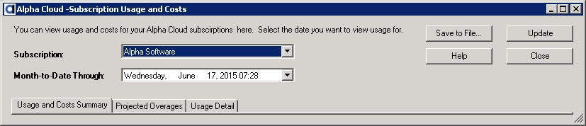
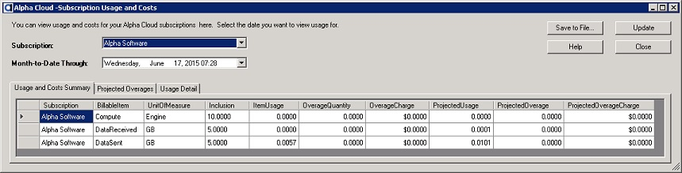
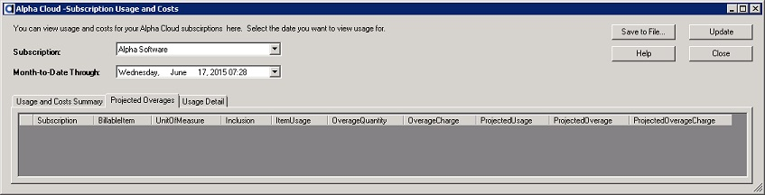
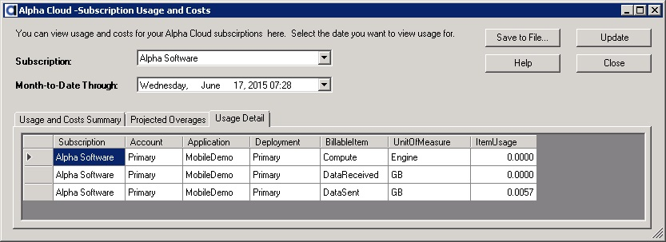

Alpha Cloud - Alpha Anywhere Developer's Guide
Understanding Usage and Costs
The Usage and Costs Dialog
The Cost and usage Summary Tab Page
The Projected Overages Tab Page
The Usage Detail Tab Page
Alpha Cloud is a managed deployment environment for Alpha Anywhere applications.
Your published applications may be deployed on one or more web sites across a number of server groups.
Although Amazon AWS bills based on hours that a machine is running, Alpha Cloud charges you based on the actual usage your application deployments require.
Billing is based on a combination of included resource capacities that help us charge based on your actual usage.
These capacities include:
- Compute Units - A unit roughly equivalent to 100 CPU seconds for an Amazon t2.xlarge virtual machine
- Data Sent - The number of gigabytes sent from your application over the internet
- Data Received - The number of gigabytes received by your application over the internet
- Data Storage - The number of gigabytes stored on behalf of your application
In order to make your monthly bill more consistent, we offer plans that include a reasonable amount of capacity relative to what you are paying.
Those capacities are only part of what you are paying for with your monthly or annual subscription.
All Alpha Cloud plans include:
- All required licenses for Alpha Anywhere Application Server for IIS
- All required licenses for Microsoft Windows Server
- Multiple servers for each server group to guarantee redundancy
- Load balancers
- Session state services
- Databases for application security users and roles
- Fully automated deployment, scaling and recovery services
- DNS and TLS services for testing purposes
- Log, usage metric and application version storage
If you use more than the capacity included in your plan during a calendar month, you will be charged for the amount of the overage as it is incurred.
We highly recommend that you contact sales to upgrade your plan if you consistently exceed the capacity included.
Alpha Cloud monitors your usage from day to day and will send your primary contact e-mail notifications as soon as it estimates that you will exceed the included capacities for your plan during a calendar month.
This is a good time to speak to sales about your anticipated growth and to work with the team to upgrade your plan.
How do I know how much capacity I need and therefore which plan is best for me on Alpha Cloud?
The amount of capacity you will need depends on your application.
Some of the factors that determine your usage will include the number of users, the amount of data you manage, the number of AJAX callbacks from your application client,
how much scripting you do in your application,
whether your application runs in a traditional browser or on a mobile device, and the way you code and compose your application.
Alpha Cloud plans attempt to characterize the kind of usage that tends to be a fit for certain types of applications, but every application is different to some degree.
We recommend that you begin by purchasing a small plan while you do your development and testing and then do load testing to determine the likely usage for your application.
Note: Many subscribers find that as they move to production deployments, their usage will grow in stages.
If you suspect that your deployment is consuming more capacity than it should relative to the complexity of the application, please contact the sales team to get help in tuning your application.
The Cloud View dialog provides access to status, activity and logs for applications you have deployed on Alpha Cloud.
To view usage and costs your subscription:
Open the Manage Subscriptions dialog, by clicking the Alpha Cloud toolbar icon on the web control panel and selecting "Advanced" and then "Subscriptions" from the drop down menu.

The Manage Subscriptions dialog will display.

Select the subscription you want to view usage and costs for by clicking on the row where the subscription is displayed.
Click the button labeled "View Usage and Costs" toward the bottom of the dialog.
The Subscription Usage and Costs dialog will display as below.

Select the date you want to see usage through. The default is the current month and day.
All data for the month selected, and through the selected date, will be included in the data retrieved.
Note: You can save the data for the current tab page to a file by clicking the button labeled "Save To File..." at the top of the dialog.
The Usage and Costs Summary tab page presents the total subscription month-to-date usage for each billable item.
If you have used more than the amount included in your subscription, the overage amount and cost will be displayed as well

View a Full Sized Image
The Projected Overages tab page displays the same information as the Usage and Costs Summary tab page, but only includes those items for which the month-to-date usage for the subscription as projected to the end of the month will result in an overage charge.

View a Full Sized Image
The Usage Details tab page summarizes all usage by item for each deployment.
The listing is ordered by subscription, account, application and deployment.

{kind=link}
{kind=link}